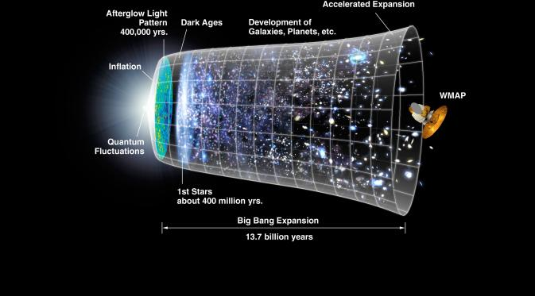
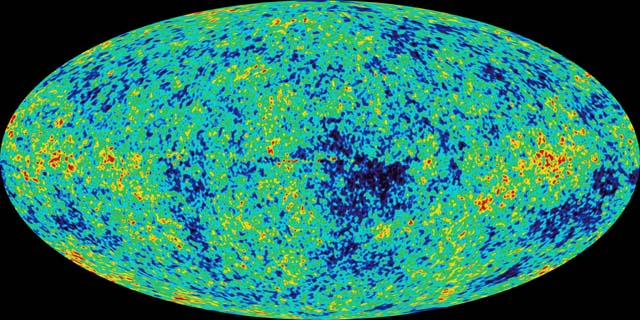

Asteroids, Comets, and Dwarf Planets
The Big Bang Theory is the leading explanation about how the universe began. At its simplest, it talks about the universe as we know it starting with a small singularity, then inflating over the next 13.8 billion years to the cosmos that we know today.
In the first second after the universe began, the surrounding temperature was about 10 billion degrees Fahrenheit (5.5 billion Celsius). The cosmos contained a vast array of fundamental particles such as neutrons, electrons and protons. These decayed or combined as the universe got cooler.
30.
The cosmic microwave background has been observed on many missions. One of the most famous space-faring missions was NASA’s Cosmic Background Explorer (COBE) satellite, which mapped the sky in the 1990s. Examining the CMB also gives astronomers clues as to the composition of the universe. Researchers think most of the cosmos is made up of matter and energy that cannot be ”sensed“ with conventional instruments, leading to the names dark matter and dark energy. Only 5 percent of the universe is made up of matter such as planets, stars and galaxies.
31.
While astronomers could see the universe’s beginnings, they’ve also been seeking out proof of its rapid inflation. Theory says that in the first second after the universe was born, our cosmos ballooned faster than the speed of light. That, by the way, does not violate Albert Einstein's speed limit since he said that light is the maximum anything can travel within the universe. That did not apply to the inflation of the universe itself.
Sad news is that the universe is not only expanding, but getting faster as it inflates. This means that with time, nobody will be able to spot other galaxies from Earth, or any other vantage point within our galaxy.
© Akshay Ramasubramanian 2017